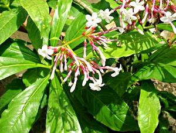
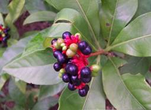

HORT 282 :: Lecture 22 :: SARPAGANDHA

SARPAGANDHA
(Rauvolfia serpentina, Apocynaceae)
 Rauvolfia root or Serpentine root is one of the important crude drugs used in modern medicine. Its leaves are simple, 7.5 -10 cm long and 3.5 -5 cm broad. Root is prominent, tuberous, usually branched, 0.5 to 2.6 cm diameter, goes 40 to 60 cm deep into soil. The root bark, which constitutes 40-60% of the whole root, is rich in alkaloids known for their efficacy in reducing high blood pressure and as a sedative or tranquilizing agent. The fresh roots emit a characteristic acrid aroma and are very bitter in taste. The roots possess high alkaloid concentration. Reserpine is the compound / active principle used for hypertension as a life saving drug in allopathic system of medicine. Roots are mainly collected from forests.
Habitat
It is an erect under shrubs (woody herb) and occasionally in scrub jungles and forest clearings growing for a height of 60-90 cm growing wild in Norh East region up to an altitude of 500 m.
Soil and Climate
The plant grows in a wide variety of soils, from sandy alluvial loam to red lateritic loam with large percentage of humus and acidic in reaction. The ideal pH for this crop is from 4.6 – 6.5. It prefers hot humid climate, humus rich sandy loam soil. A climate with a temperature range of 10 – 300C seems to be well suited for this plant. The areas with high rainfall and properly drained soil are best.
Variety
(i) Local collection from wild
(ii) Jawahar Lal Neheru Krishi Viswa Vidyalaya has developed one improved variety-R.S-1. The seed viability remains upto 50-60 % after 7 months of storage and yield about 2.5 t/dry roots/ ha. In this variety the alkaloid content has been found 1.64 – 2.94 % at 18 months growth.
Propagation
Rauvolfia can be propagated by seed and also by vegetative means like root cutting, root stumps, and stem cutting. Seed propagation is best method for commercial plantation. A healthy mother stock should be raised before hand for collection of seeds.
A) Seed propagation
Seed germination is highly variable. Germination of heavy seeds during April-June after soaking them in water for 24 hours is about 20-40 % while freshly collected heavy seeds germination is highest (up to 60 %). April-May is found to be suitable for sowing seeds in nursery. The nursery is prepared by raised beds mixing with one-third of well matured FYM and leaf mould two-third- amount medium silt-loam soil under partial shade.
Seeds are sown 2-3 cm apart in rows in shallow furrows by April. The furrows are then covered with a fine mixture of soil and FYM. The bed should be kept moist by light watering. Germination starts after 15-20 days and continues up to 40-50 days. The nursery should be kept moist throughout the germination period. Seedlings are ready by mid June- July for transplantation. Seedlings may be raised in poly bags also. About 6 kg seed sown during April-May in a 500-m2 bed will be sufficient for one-hectare area.
B) By stem cutting
As collection of seeds is both laborious and costly, vegetative propagation by root or shoot cuttings has been advocated for raising plantation to collect the seeds, as well as to quickly multiply the genetically superior clones. Hard wooded stem cutting measuring 15-20 cm are loosely planted during June in the nursery beds where continuous moisture is maintained. After sprouting and giving out roots, these plants are transplanted in the main field at given spacing. Nearly 75-95 % success is obtained if treated with rooting hormone β- indole acetic acid @ 30 ppm for 12 hours. Treated cuttings root within 15 days.
C) By root cutting
Large taproots with a few filiform lateral secondary rootlets are used. They are cut at 2.5- 5 cm in length and planted on moist sand bed. Root cuttings of about 0.25 cm diameter planted in March-June give about 80 % or more success in about 1-1.5 months time. About 100 kg of root cuttings are required to plant 1 ha.
D) By root-stump
This is prepared by cutting about 5 cm root with a portion of the stem above the collar and gives about 90-95 % success. Such plants are transplanted in May-July. Limitation is only one plant can be raised from a single stump.
However, a best result for commercial cultivation is obtained from seed propagation only. To establish initial mother stock the above methods may be used.
Planting
Transplanting the nursery grown seedlings of 40-50 days old which have 4-6 leaves (10-12 cm tall, naked rooted or in poly bags), are planted at spacing of 30 x 30 cm is optimum. Seedlings are carefully dugout and the taproot is cut. They are then dipped in a 0.1 % solution of fungicide before planting to protect them against soil borne fungus causing damping off disease. Sarpagandha takes a long duration (18 months onwards) as it is slow growing crop particularly in the initial stage. About 80,000 – 1, 00,000 number of seedlings are required/ha as a sole crop.
Manures and fertilizers
FYM @ 20-25 MT/ha should be applied during land preparation. After planting N,P & K at the rate 10:60:30 kg/ha is applied as basal dose. Later two equal doses of N each of 10 kg /ha in moist soil may be applied at 50 days and 170 days after planting.
Irrigation
Rouvolfia is cultivated as a rainfed crop. However, if available, 4 irrigations in summer and 2 in winter at one month interval may be applied for higher yield.
Inter cropping
It is possible to grow inter crop in Rauvolfia plantation, like patchouli in the first year particularly where good irrigation facilities are available. Since Rouvolfia is shade loving it can be planted as intercrop in orchards or some other plantation crops.
Weeding
Weeding, cleaning, and hoeing twice during rains and after rains.
Defloration
Flowering and fruiting starts from 6 months onward after transplanting which is irrelevant, unless there is need to collect sufficient seeds for sale or for mass multiplication. If the plant is allowed to flower and bear fruits, these markedly depress both shoot and root growth, because a significant amount of photosynthates is utilized for the production of flowers and fruits by the plants. Therefore, defloration is recommended for better root growth and yield. For seed collection an area may ear marked.
Pests and Diseases
Insect pests
1. Root knots appear as galls caused by nematode causes stunted growth, etiolation and decrease in the leaf size are the symptoms in the aerial portion. Application of 25 kg of 3 G Carbofuran or 20 of 10 G Phorate granules /ha will control them. Tagetes may be intercropped as trap crop against nematode.
2. A pyralid caterpillar (Glyphodes vertumnalis) cause appreciable damage to the leaves. Some other caterpillars roll the leaf and feed on the green matter of tender leaves causing defoliation. They can be controlled by spraying 0.2 % Rogor.
3. Cockchafer grubs (Anomala polita) attack the seedlings about 2 cm below the hypocotyls, resulting in their drying up. To control the attack of grubs, mix phorate granules with the soil at the time of nursery preparation.
Diseases
1. Leaf spot caused by Cercospora rauvolfiae manifests as dark-brown coloured spots on the upper surface of the leaf and yellowish – brown on the lower surface. The affected leaves turn yellow, become dry, and subsequently fall off, resulting in defoliation. To control this Dithane M-45 @ 0.2% is to be sprayed before the monsoon and repeated at monthly intervals until November.
2. Alternaria tenuis attacks the leaves, resulting in minute, brownish or dark coloured circular spots with a yellowish margin on the ventral side of the leaves. The fungus also affects the flowers and fruits. The crop should be sprayed with 30 g Blitox in 10 litre water, whenever the symptoms are seen.
Collection of seeds
For collection of seeds, plants in small portion of plantation are allowed to flower and bear fruits.
The fruits start maturing from middle of July and continue till February. Mature seeds bear a purplish black fleshy covering. Since all the seeds do not mature at a time, these are picked periodically, otherwise ripe seeds drop off. After the collection, fleshy covering should be removed by washing the seeds in water. After washing, the seeds are dried in shade and are stored in airtight containers.

Harvesting & processing
The marketable roots are generally collected 2-3 years after plantation preferably after 30 months of planting. When transplanting is done during June-July harvesting period coincides with shedding of leaves during early autumn. At this stage root contains maximum concentration of total alkaloids. During harvest the roots may be found to go up to 40 cm deep in the soil. During root harvesting the thin roots are also collected. Care should be taken to keep the root bark intact as the bark constitutes 40-56 % of the whole root and has a higher alkaloid content. In general during winter months plants remain dormant, is considered ideal for harvesting.
Application of a light irrigation if possible will make digging easier. After digging, the roots are cleaned, washed and cut into 12-15 cm pieces for drying and storage. The dry root possesses up to 10-12 % moisture. The dried roots are stored in polythene lined gunny bags in cool dry place to protect them from mould.
Yield
Though Rauvolfia can be propagated by various methods; maximum yield of root is obtained when the propagation is done by seeds that varies from 0.1 to 0.4 kg per plant.. The average yield of Rauvolfia dry root is approximately 2000-2500 kg/ha under average management when harvested at 30 months.
***************
- Botanical name of sarpagantha ___________
- Economic part of sarpagantha _____________
- Alkaloid content present in sarpagantha ____________
- Propagation of sarpagantha is through ____________
- Alkaloid in sarpagantha has ________ properties
| Download this lecture as PDF here |